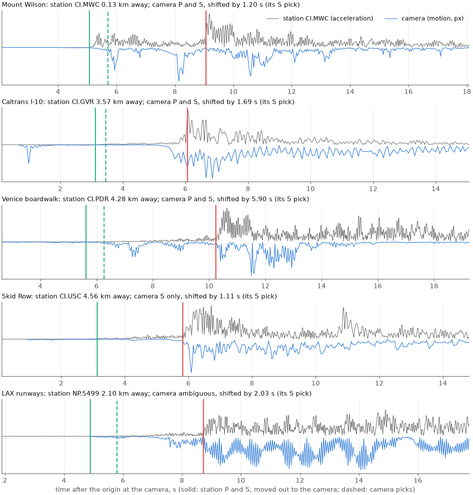
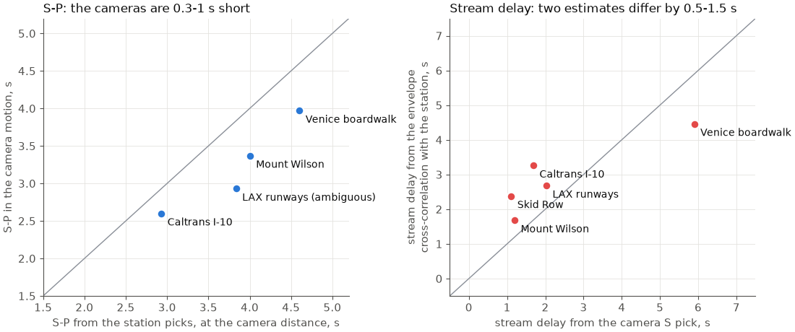
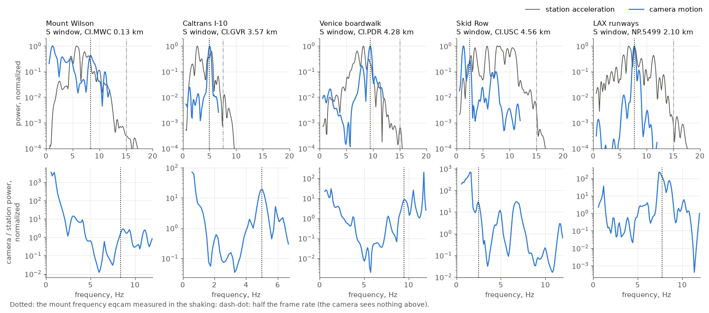

Camera motion vs seismic stations
2026-11-20 11:25:35 UTC, Mw 3.94, 1 km NW of Commerce, CA (ShakeAlert first estimate M4.2). Draft note, one event, five cameras.
Draft research note. Does the image motion of public cameras measure the ground motion? We compared it with the nearest seismic stations: the S-P times, the stream delays and the P and S spectra. Automated analysis of one small event; not reviewed.
In short
- The spectra are the camera mount's, not the ground's. The camera S-window spectra peak at the mount's own frequencies, not at the station's peaks. Their shapes correlate poorly with the station spectra (log correlation −0.6 to +0.4, even 130 m from a station). Their S/P energy ratios differ by up to 20 dB. Amplitudes are pixels and depend on the zoom and the mount.
- The arrival times are rough, to about 1-2 s. The camera S-P times are 0.3-1 s shorter than the stations' (P is small, picked late, or the wrong onset is paired). Two estimates of the stream delay, from the S pick and from the envelope cross-correlated with the station, differ by 0.5-1.5 s. The camera motion also has pulses that are not in the ground motion (compression or encoder glitches, e.g., Mount Wilson at 8 and 10.5 s).
- What is usable: whether a camera shook, and when to within about 1-2 s, once the stream delay is known. The envelope of the shaking follows the station's (peak correlation 0.75-0.94). The camera also gives the mount's resonance frequencies, which are useful for calibrating and screening cameras.
- Not usable as is: ground-motion spectra, amplitudes and precise P and S picks.
Data
For each camera with a camera-motion pick (from the arrivals map), we took the nearest station of the CI or NP network whose data the SCEDC or EarthScope web services return (broadband HH preferred, else strong-motion HN). We used its catalog P and S picks (ComCat) and its horizontal acceleration with the instrument response removed. The windows were the same as in eqcam: the noise before P, P to S, and 3 s from S. The station times were moved out to the camera's hypocentral distance with the station's apparent P and S velocities. Closer stations exist for three cameras (strong-motion and Community Seismic Network stations, 0.15-0.5 km away), but their data were not available through these services.
| Camera | Station (distance) | Picks | S-P camera / station, s | Stream delay: S pick / envelope, s | S peak camera / station, Hz | Mount, Hz | Shape corr. |
|---|---|---|---|---|---|---|---|
| Mount Wilson | CI.MWC (0.13 km) | P and S | 3.37 / 4.00 | 1.20 / 1.68 | 1.3 / 5.8 | 8.4 | −0.41 |
| Caltrans I-10, Fremont Ave | CI.GVR (3.6 km) | P and S | 2.60 / 2.93 | 1.69 / 3.26 | 5.0 / 2.7 | 5.0 | 0.05 |
| Venice boardwalk | CI.PDR (4.3 km) | P and S | 3.97 / 4.60 | 5.90 / 4.46 | 9.5 / 8.2 | 9.5 | 0.22 |
| Skid Row | CI.USC (4.6 km) | S only | – / 2.69 | 1.11 / 2.38 | 1.3 / 10.6 | 2.5 | −0.59 |
| LAX runways | NP.5499 (2.1 km) | ambiguous | 2.93 / 3.84 | 2.03 / 2.68 | 7.7 / 11.3 | 7.7 | 0.43 |
The station S-P is at the camera's distance. The stream delay is the time by which the video lags the ground motion: from the camera's S pick against the station's S moved out, or from the peak of the cross-correlation of the two log envelopes. The S peak is the maximum of the S-window spectrum within the camera's band; the mount is the frequency eqcam measured in the shaking. The shape correlation is that of the log spectra of the S window.



Why
A camera on a pole, a mast or a building is an oscillator driven by the ground. Below its resonance, its image motion follows the ground acceleration; at the resonance it is amplified many times; above it, it falls off. The image also mixes the camera's tilt with its zoom, the video codec adds glitches, and the frame rate (15-30 fps) caps the band at 7.5-15 Hz. A small event like this one gives weak P motion, close to the codec's noise.
What it would take
- A seismometer at a few cameras, on or near the mount. The camera/ground ratio then gives each mount's response, which could be removed, at least below its resonance.
- Stream delays from a clock in the video, or from regular tests, rather than from the picks.
- Larger events and more cameras, to tell what is systematic from what is specific to this event.
Changes made in eqcam after this comparison
- The predicted arrivals use Vp 5.7 and Vs 3.1 km/s (Vp/Vs about 1.8, the stations' apparent velocities here) instead of 6.0 and 3.5.
- The P-S pair may be up to 25 % shorter than expected (P picked late). The stream delay is taken from S, and how late P was picked is reported.
- The spectra are labeled as the camera mount's response, and the picks as uncertain by about 1 s or more.
Station data: Southern California Earthquake Data Center (SCEDC), EarthScope; picks and location: USGS ComCat (ci41364111). Camera motion: eqcam, from public camera streams. About, sources and removal requests